One console that signs in to every quick-commerce portal for you, collects the reports on a timetable, and keeps every file in one place.
Today, a week of quick-commerce reporting means signing in to five portals by hand, waiting for a code to arrive by email, picking the right business, setting the same date range five times, and downloading the same twenty files.
It costs a person about an hour a day. It happens late, because that person is busy. And afterwards nobody can say for certain whether a given file was pulled for the right dates — several of these exports carry no dates inside them at all.
UniQCAI does that collection round instead. You connect each brand to each platform once. After that you either press a button or leave a timetable running, and the files arrive in one place, named consistently, ready to open.
| Role | Who they are | What they can do |
|---|---|---|
| Super admin | One or two people at Digital Upshot | Everything, including system settings and the full activity log |
| Admin | The Digital Upshot team running the service | Every brand. Creates brands, enters logins, grants access |
| Brand user | Your team | Only the brands they are given, at one of two levels |
A brand user is granted a brand at one of two levels:
Someone with no grants sees nothing at all — not an empty list of other people's brands.
Everything you see is grouped the same way: platform first, then Ads or Sales, then the individual report.
You never have to know the internal name of the website a report comes from. Those names appear only in setup details and error messages, where they help support work out what broke.
Two consequences shape the setup, and both are deliberate:
Because one login can open more than one business, every connection records which business it is supposed to open — and that record is checked before every single download. See section 06.
Once per brand per platform, and it takes a few minutes.
One login block per category, with a toggle for Ads and Sales use the same login. An existing login can be reused rather than retyped — which is how one agency login comes to serve three brands.
Most of these portals will not accept a password alone. They email a numeric code, or a one-time sign-in link. So each login is pointed at an inbox that receives those messages.
Pick the brand, tick the reports, choose a date range. Presets cover yesterday, the last seven days, this month and the previous month. Dates are always India Standard Time.
Where a portal limits how much can be exported at once, the panel says so and offers to split the request. Zepto's files carry no dates inside them at all, so it offers to split those by day — otherwise a week of Zepto is one file you cannot tell apart from any other week.
Daily, weekly or monthly, at a time you choose. Each timetable says which dates it should pull — usually a rolling window such as the last three days, so that late-arriving corrections get picked up.
It checks it is on your business before it downloads anything.
It reads back which business the portal actually opened and compares it with what the connection expects. If they differ it stops and downloads nothing. This matters more than it sounds: a wrong pick produces a complete, believable file for somebody else's business, and no later check would catch it.
One login is never driven twice at once.
A second request for the same login waits its turn rather than fighting it and getting both locked out.
It retries the right failures and refuses the wrong ones.
A timeout, a slow portal or a changed page is tried again. A rejected password is not — retrying that risks locking the account — and neither is a wrong business.
A collection that dies is reported as failed.
If the machine doing the work stops, the run is marked failed within minutes rather than sitting on screen as "running" forever.
The file you download is exactly what the portal produced. The bytes are never edited, never re-saved, never stamped.
Only the name is ours:
That is not cosmetic. Several portals hand back names like
export(3).xlsx, and Zepto's exports contain no date column
anywhere — so without a generated name there is no way to tell one
period from another. The portal's own filename is kept alongside, in
case you ever need it.
Every version is kept. Blinkit in particular restates figures after the fact: the same campaign-day can change days later. So each pull is stored separately, the newest is flagged Latest, and older ones stay available. Nothing is overwritten.
Files can be taken one at a time or as a zip, and a set of filters can be shared as a link.
A brand contact gets a much smaller app: their brand, how fresh each platform is, the latest files, and a button to take the lot. No setup, no other brands, no other clients. It works on a phone, because grabbing a file is often something done between meetings.
These exist for the Digital Upshot team rather than for you — but they are part of the approval, because they decide what we can answer when you ask.
There is also a full activity log: who changed which login, who downloaded which file, and when.
| Platform | Ads | Sales |
|---|---|---|
| Zepto | Working today | In build |
| Blinkit | Scheduled | Scheduled |
| Swiggy Instamart | Scheduled | Scheduled |
| Flipkart Minutes | Scheduled | Scheduled |
| BigBasket | On hold | On hold |
Zepto Ads is complete and has collected real reports end to end. The rest have had their reports catalogued and their sign-in behaviour worked out; the collection steps are the remaining work, and they go faster now that everything shared between platforms is built once and proven.
BigBasket is the one genuine unknown: it requires a Google sign-in with two-factor authentication, which behaves differently from the others. It is parked rather than attempted, pending your decision below.
The shape of the product does not change as those fill in. That is what this document asks you to approve.
Storage and cost. Our suggestion: keep everything for the first year, then revisit with real figures.
The list is not yet fixed. We would rather build the four you open than the twelve you do not.
Seller Hub carries more than Minutes. We need your list to scope it.
This changes who can set a brand up, and how fast onboarding goes.
Before we roll out the remaining platforms we want one named person to confirm the Zepto files match what they see in the portal.
It needs a Google sign-in with two-factor authentication. Worth doing only if BigBasket matters to you commercially.
Portals finish yesterday's figures at different hours. We suggest 06:00 IST as the default.
Entered once into the setup screen. Nothing can be collected without them. They are encrypted immediately and never shown again.
This is how the codes reach us. One inbox can serve every platform.
If codes reach us by forwarding rather than directly, we need real examples to prove the matching works before go-live. This is the last open item on setup.
And at which level — Manager or Executive — so we can invite them.
These block nothing, but they change what a future dashboard could honestly claim, so they are cheaper to answer now:
Approving this document means you agree that:
Cheap to change after approval: wording and labels, which reports are ticked by default, timetable times, who gets access, and the order platforms are built in.
Expensive to change: the grouping of platform → Ads/Sales → report, the two-level brand permission model, and the decision to store files untouched rather than reshaped on the way in.
| Word | Means |
|---|---|
| Brand | One of your brands. Everything is grouped under one. |
| Platform | Zepto, Blinkit, Swiggy Instamart, Flipkart Minutes, BigBasket. |
| Category | Ads or Sales. |
| Report | One export, such as Campaign performance. |
| Connection | A brand joined to a platform login, including which business that login should open. |
| Run | One collection. Contains one job per report. |
| Schedule | A timetable that starts runs by itself. |
| Version | An earlier pull of the same report for the same dates, kept after the portal restated its figures. |
| Status | Means |
|---|---|
| Queued | Waiting its turn, usually behind another job on the same login. |
| Running | In progress. |
| Waiting for OTP | Signed in, waiting for the emailed code to arrive. |
| Succeeded | Everything asked for was collected. |
| Partially succeeded | Some reports arrived, some did not. The log says which. |
| Failed | Nothing was collected. The log says why. |
| Healthy | A saved login that is working. |
| Needs attention | A saved login that has stopped working. |
| Untested | A saved login that has never been tested. |